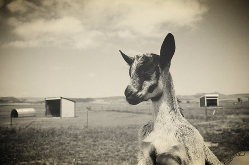

HOME
ABOUT
YOUR HOSTS
EPISODES
CONTACT
cor·nu·co·pi·a
ˌkôrn(y)əˈkōpēə/
noun
a symbol of plenty consisting of a goat's horn overflowing with flowers, fruit, and corn.
an ornamental container shaped line a goat's horn.
an abundant supply of good things of a specified kind.
